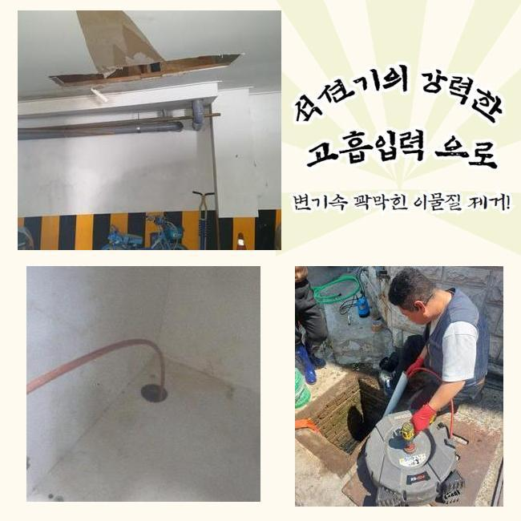
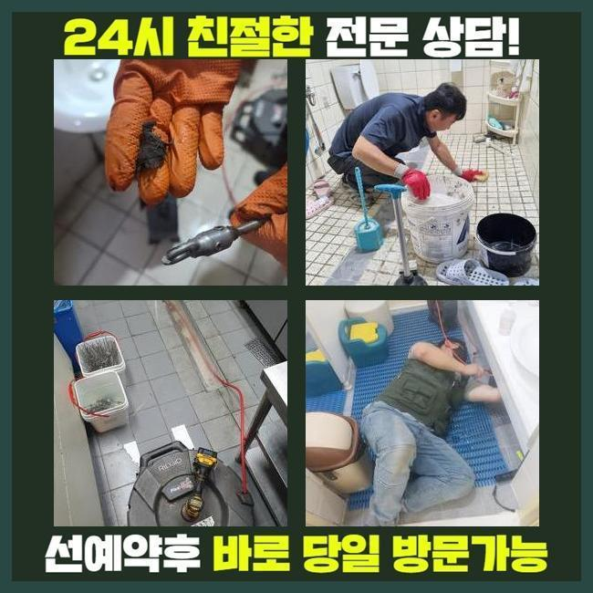
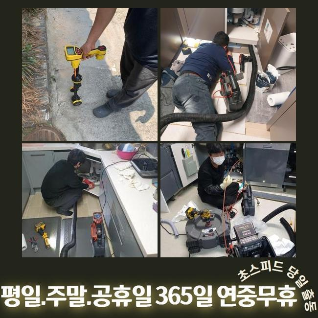
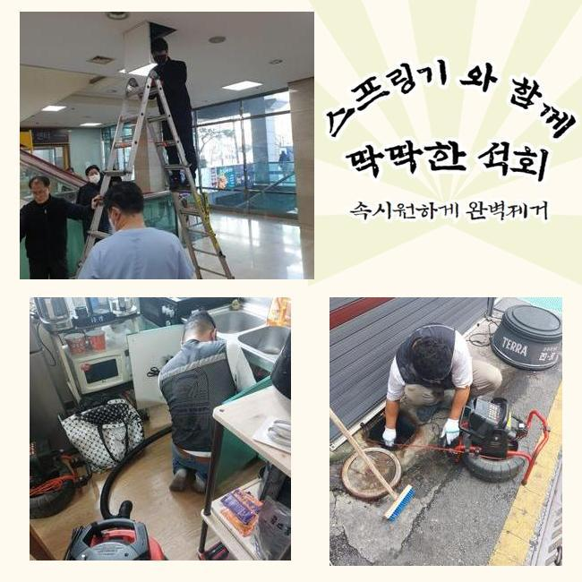
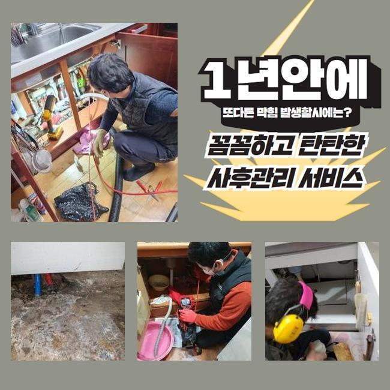
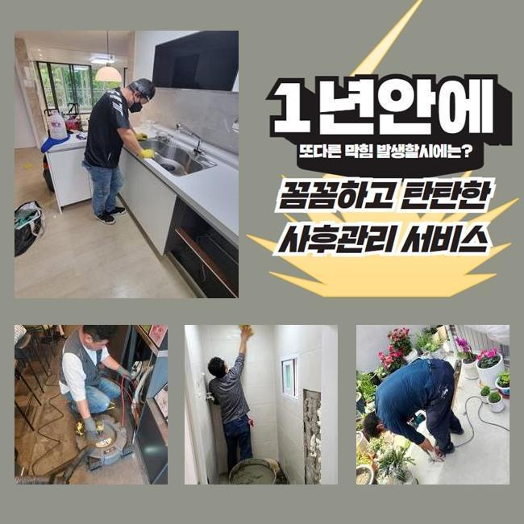
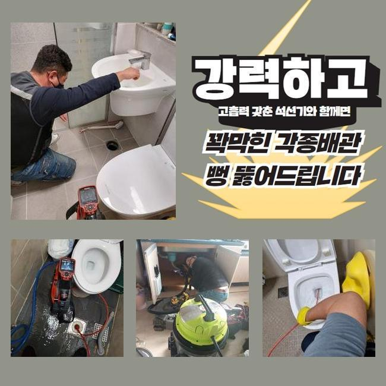

🏠 안양 박달2동욕실막힘 고압세척비용 누수탐지공사
안양 하수구막힘 전문 시공 후기

📋 작업 개요
- 위치: 안양
- 서비스 유형: 하수구막힘, 배관막힘, 집수정막힘, 누수수리, 역류해결, 배관청소, 고압세척, 설비공사
- 작업 일시: 2025. 3. 25. 21:31
- 업체명: 하수구수사대 (010-5615-2118)
🔍 문제 상황
안양 박달2동욕실막힘 고압세척비용 누수탐지공사
저희의경우 며칠전 상가빌딩의 통수장애를 해결하고자 내방했는데요
상가관리를 도맡았던 고객분의 설명을 듣고 저희전문진은 상업시설의 화장실쪽에서 감당하기 힘든 이물질 역류 막힘들을 시정하기위하여 내방했습니다
의뢰인은 이것으로 인하여 다양한 민원까지 수용해야했던 상황이였어요
이 모든 상황들을 조속히 대응하고자 저희전문진은 도착 후 관로를 살폈죠
지금까지 야기되는 슬러지가 배수관을 막아선걸 관찰하고 조속히 고쳐냈는데요
그간의 사례로 추측하니 이런 오염물들은 일반적으로 메인관에서 관찰되기에 이같은 증세가 생겨나버린것으로 생각했죠
그렇기에 조속히 외부쪽으로 자리를 옮겨 이상징후가 포착된 하수관의 부위를 파악하기위하여 검사를 이행했는데요
탐지기기를 운용하여 배관의 부위를 찾았고 내부를 바라보니 이물의 고착률이 만만치 않았어요
내부로부터 누적된 부유물들의 찌꺼기들과 바깥에서 흘러온 흙까지 섞여있던 상태였어요

🔎 원인 분석
💡 전문가 진단: 정밀 진단 장비를 사용하여 슬러지의 고착 여부를 판명하고 타격/세척 작업을 실시했습니다.
이러한 배수정체를 시정해내고자 서둘러 알맞는 대응들을 실시했고 상가건축물의 시설을 안정적으로 사용하게 하였습니다
일정 구간들에 잔해물이 축적되면 많은 통수장애를 일으키므로 해결들을 미루지않는게 요구됩니다
검수해봤더니 흡착물들이 구간별로 자리하고 있는걸 확인했는데요
이물들은 오랫동안 쌓인다면서 돌덩이처럼 고착되기 시작했어요
고착화와 이물퇴적으로 인하여 막히는 결함들이 생겨났다 판단했죠
이를 확인하고, 장비들을 통해 하수관을 청소해보기로 했죠
다양한 기계를 써서 배수관을 세척해줄때에는 고수압의 세척들이 중요하겠습니다
혹시라도 집수정 등에 흡착물들이 자리잡고 있다면 보통의 방식으론 개선이 안될수 있는데요
그러므로, 고압수청소로 효율적으로 내부오염원들을 없애주는것이 실시되야했습니다
구간별 청소를 실시해주면 하수관을 청결하게 보존가능하고 오류가 누적되는 것을 앞서서 피할 수 있게됩니다
그리하여, 배수구를 청소하고자하면 고수압방식을 고려하는것 또한 권장드립니다

🔧 작업 과정
같은 맥락으로 잔해들이 누적되지 않을 정도로 정기적인 점검하는게 요구되고 알맞게 대처해준다면 수월하게 막힘들을 해결할 수 있습니다
그렇기에 오류가 발생했을 때는 안전한 해결책이 중요하고 전문인들의 도움으로 흐름에 문제없는 배수 과정들을 지켜내는게 중요한데요
관리해주는게 중요하겠으나 세척과정을 통해 배관을 깔끔히 만들어주는게 효과적인 방책이 될 수 있겠습니다
세척들을 제대로 실시하기위해선 구조라던가 특이성들을 이해해야합니다
하수도의 경우 여러 소재로 구성되어있고 시간들이 지나가며 사용기한이 하락하기에 무리를 쏘는것은 위험이 따릅니다
배수관의 컨디션과 현장의 특수성을 파악해 알맞는 방법들을 운용하는게 기본이에요
이같은 조건들을 지켜준다면 고수압의 방식으로 최적의 배관컨디션을 얻게됩니다
운용했던 석션기기의 경우 강한 흡입으로 관로의 부유물들을 효율적으로 제거했습니다
석션장치에 빨려나온 모래등의 찌꺼기를 보게되었고 내시경도구를 운용해 깊숙한 부분까지 살펴보니 아직 이물들이 대다수라 배관공간을 협소하게 했죠
이를 확인하고 타 방법을 실시해 저희의경우 관로에서 발생한 통수장애를 조속하고 안전하게 해결해주고 매립위치와 오염물의 위치들을 특정하고 시공을 해주어 적절한 통수 과정을 유지시켰죠
이것은 상당수 잔해가 내측에 축적되어 쌓이는 결함으로 내측으로부터 좁혀지게되어 유수흐름들이 정체되는 트러블이 수렁으로 빠지기도합니다
이럴땐 전문가들의 능력을 바탕으로 내시경도구를 운용해 깊은 지점을 검수하고 명확한 까닭들을 없애주는것이 이행되어야해요
고압노즐 분사를 진행시키면서 저희전문진은 타겟위치로 호스들을 투입시켰고 1m 포인트에선 뭉친 기름때가 일시에 빠져나가는것을 보았습니다
이전과는 다르게 기름덩어리들이 자리잡은 3미터 위치에서는 슬러지들의 상황을 체크하고 분사의 압력을 주시하며 세척을 실시했습니다
기름고착의 흡착이 심각하여 온수 이러한 작업들을 진행했는데 안전관련 요소를 상기하고 기름때들을 제거시켰어요
막히는 사례는 불현듯 야기되어 수많은 고충들을 초래합니다
배관 장애는 8할 이상이 이물들이 점차 쌓여 발생되기에 골든타임 내에 막힘들을 시정해야해요


✅ 작업 완료
의뢰자의 고민을 덜어드리기위해 조속하게 대처해드릴게요
통수오류를 조사하고 올바른 방법들을 결정하여 시정에 심혈을 기울이죠
신속한 대응이 중요하므로 문제상태를 내버려두는 일은 없어야해요
도움들이 필요할땐 편히 문의하시면 되겠습니다
결함이 발생하면 조속히 대응하여 안정적이며 깔끔한 통수과정을 선사하겠습니다




⚠️ 베란다 누수 및 방수 관리 방법
- ✅ 비가 많이 올 때 창틀 주변이나 아래층 천장에 얼룩이 생기는지 정기적으로 확인해 보세요.
- ✅ 우수관 주변 실리콘 마감이 들뜨거나 깨진 틈새가 있는지 손상 여부를 수시로 체크하세요.
- ✅ 베란다 바닥 타일의 줄눈(메지)이 소실되면 그 틈으로 물이 침투하여 누수가 유발됩니다.
- ✅ 누수 의심 증상 발견 시 방치하면 아래층 손실이 커지므로 즉시 전문가의 진단을 받으십시오.
💡 핵심 정리
- 확실한 장비 작업(내시경 점검 및 샤프트 스케일링)으로 원인을 뿌리 뽑습니다.
- 작업 후 1년 이내에 동일한 부위 재발 시 100% 무상 A/S 서비스를 보장합니다.
- 서울 · 경기 · 인천 전 지역에 24시간 언제든 긴급 출동할 수 있도록 항시 대기 중입니다.
❓ 자주 묻는 질문 (FAQ)
🚨 안양 하수구막힘 문제로 고민이신가요?
정확한 원인 진단과 확실한 시공으로 재발 없는 해결을 약속드립니다.
24시간 긴급 출동 | 서울 · 경기 · 인천 전지역 | 1년 내 재발 시 무상 A/S